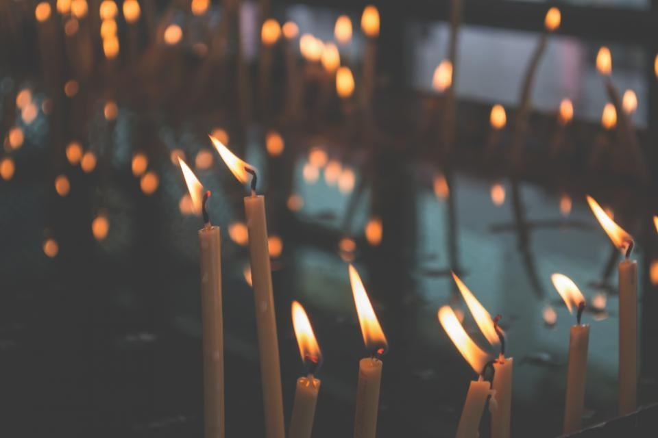
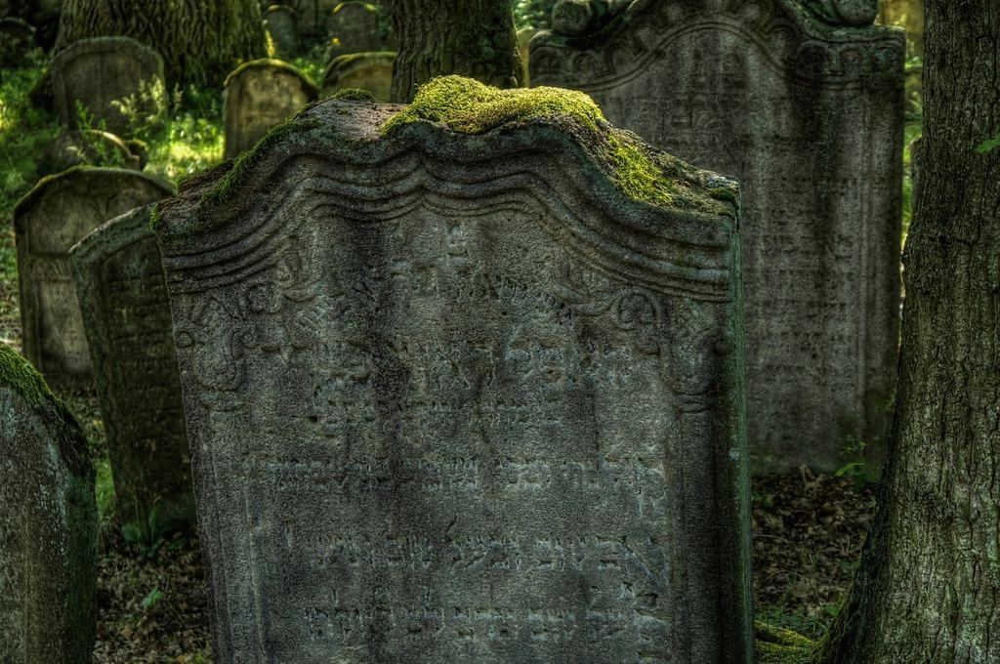

Ceremonier som berättar ett helt liv
Vi tar ett begränsat antal uppdrag för att varje familj ska få en ceremoniansvarig från första samtal till sista tackkort. Musik, tryck och minnesstund formges för just er.
- Våra principer
Färre uppdrag, mer tid för varje
- Illustrationsbild

Vi tackar ibland nej för att kunna hålla det vi lovar. Varje ceremoniansvarig tar högst sex nya familjer i månaden, och samma person följer er hela vägen. Efter varje begravning ber vi familjen om ett omdöme som läses av ägarna.
Läs om hur vi arbetar- 6nya familjer per ceremoniansvarig och månad
- 3 dgrtill skriftligt ceremoniförslag
- 1kontaktperson från första till sista samtalet
Där vi kan hjälpa er
- 01
Personlig ceremoni
Präst, officiant eller ceremoniledare – formgiven tillsammans med familjen.
Läs mer - 02
Musik och sång
Organister, sångare och stråkkvartetter vi har arbetat med i många år.
Läs mer - 03
Minnesvåningen
Fem rum med kakelugnar för upp till 120 gäster, tre trappor upp på Karlavägen.
Läs mer - 04
Tryck och program
Minnesprogram i boktryck på bomullspapper, sättes och trycks i vår egen verkstad.
Läs mer - 05
Dödsboförvaltning
Bouppteckning, arvskifte, värdering och avveckling av bostad och bolag.
Läs mer - 06
Internationella familjer
Ceremonier på engelska, franska och tyska och transporter till och från utlandet.
Läs mer - 07
Gravvård
Familjegravar, nya stenar och renovering på Norra begravningsplatsen och Skogskyrkogården.
Läs mer - 08
Träffa oss
På Karlavägen, i ert hem eller på telefon.
Läs mer

En bra begravning märks inte. Gästerna ska gå därifrån och tala om den som dog, inte om blommorna eller om oss.

Frågor inför ett första samtal
- Illustrationsbild

- Fråga 01
Varför tar ni ett begränsat antal uppdrag?
För att samma ceremoniansvarig ska kunna följa familjen hela vägen. Har vi inte möjlighet att ta ett uppdrag säger vi det direkt och rekommenderar en kollega.
- Fråga 02
Vad kostar en begravning hos er?
Kostnaden beror helt på ceremonins omfattning. En kyrklig begravning med minnesstund på minnesvåningen för 50 gäster ligger oftast mellan 65 000 och 95 000 kronor. Ni får alltid ett skriftligt förslag innan något bokas.
- Fråga 03
Kan ceremonin hållas utanför kyrkan?
Ja. Vi har hållit ceremonier i konserthus, på museer, i hem och trädgårdar. Kistan kan vara med eller så hålls ceremonin efter kremeringen.
Hittar du inte svaret? Ring eller mejla oss.
070-174 06 66Kontakta byrån- Fråga 04
Hanterar ni dödsbon med bolag och fastigheter?
Ja. Våra jurister samarbetar med revisorer, mäklare och värderare och kan förvalta dödsboet tills arvskiftet är klart.

- Fråga 05
Ordnar ni begravningar för familjer som bor utomlands?
Ofta. Vi arbetar på engelska, franska och tyska och kan sköta planeringen digitalt med familjer var som helst i världen.
Fyra avdelningar på Karlavägen
 01Karlavägen 58
01Karlavägen 58Ceremoniavdelningen
Åtta ceremoniansvariga
Var och en ansvarar för ett begränsat antal familjer och följer dem genom hela förloppet.
Läs mer 02Värdskap och kök
02Värdskap och kökMinnesvåningen
Fem rum, egen kokerska
Tre värdar och en kokerska tar hand om minnesstunder för 20 till 120 gäster.
Läs mer 03Juridik och förvaltning
03Juridik och förvaltningRosenius Dödsbo
Två jurister och en värderare
Avdelningen hanterar omkring 150 dödsbon om året, varav många med fastigheter, konst eller bolag.
Läs mer 04Boktryck i källaren
04Boktryck i källarenTryckeriet
Typsättning för hand
En typograf som trycker minnesprogram, tackkort och minnesböcker på bomullspapper.
Läs mer
- Illustrationsbild
 Rosenius i siffror
Rosenius i siffrorSextiofyra år på Karlavägen
- 011962Grundad på Karlavägen
- 02
 280per årBegravningar
280per årBegravningar - 036familjerPer ceremoniansvarig i månaden
- 04120gästerRyms på minnesvåningen
Gunnar Rosenius öppnade byrån på Karlavägen 1962 och blev känd för att ordna begravningar som liknade de människor de hedrade. Sedan 2009 ägs byrån av Cecilia Lund och Fredrik Ahlgren, som båda arbetat här sedan 1990-talet.
Alla nyckeltal

 01
01SBF-auktoriserade
Medlemmar i Sveriges Begravningsbyråers Förbund sedan 1963.

02Konsumentverkets ramar
Våra avtal följer de bestämmelser för begravningstjänster som förhandlats med Konsumentverket.
 03
03Egna jurister
Dödsboavdelningens jurister har juristexamen och vidareutbildning i familje- och arvsrätt.
 04
04Förvaltarförsäkring
Förmögenhetsbrottsförsäkring och ansvarsförsäkring för förvaltning av dödsbon upp till 10 miljoner kronor.
Avsked vi har fått utforma
 01
01Ceremoni i Berwaldhallen
GenomfördStockholm · Borgerlig ceremoni · 2026 02
02Jordfästning i Hedvig Eleonora
GenomfördÖstermalm · Kyrklig begravning · 2025 03
03Minnesstund på Skeppsholmen
GenomfördStockholm · Minnesstund · 2025 04
04Dödsbo med konstsamling
GenomfördDjursholm · Dödsboförvaltning · 2025 05
05Familjegrav på Norra begravningsplatsen
GenomfördSolna · Gravvård · 2024

Ett hantverk som tar år att lära
Nya ceremoniansvariga arbetar ett år tillsammans med en erfaren kollega innan de tar egna familjer. Vi söker människor med bakgrund inom kultur, evenemang eller vård som vill göra det här länge.
Varje ceremoni gås igenom på vårt morgonmöte dagen efter – vad blev fint, och vad kan vi göra bättre.
- CeremoniansvarigStockholm
- Värd, minnesvåningenStockholm

Minnesvåningen har renoverats
Kakelugnarna är omsatta och väggarna målade med linoljefärg i originalkulörer från 1890.
Läs mer